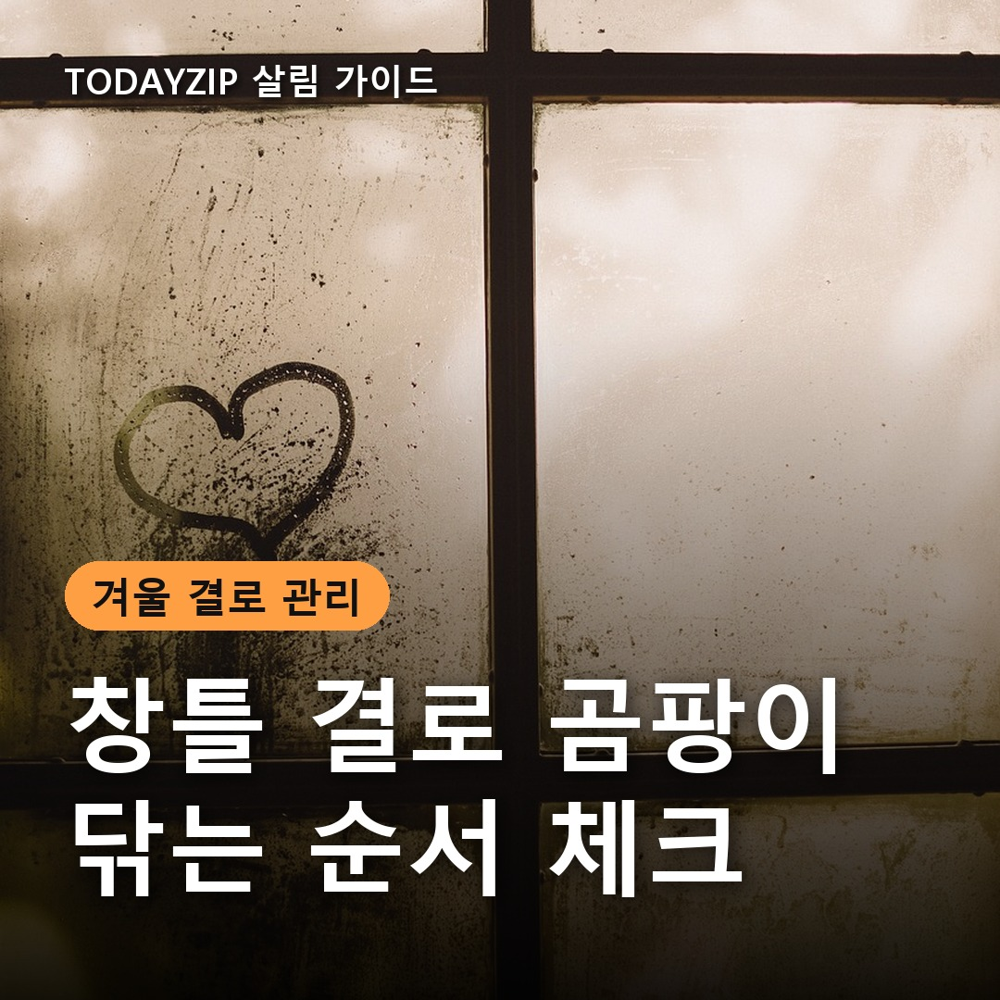
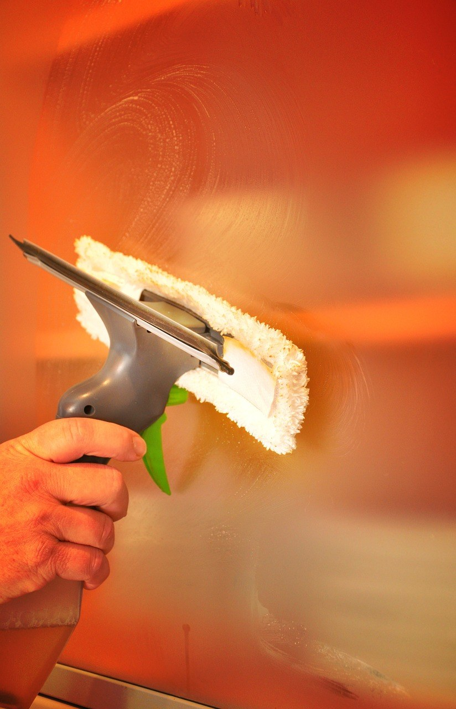
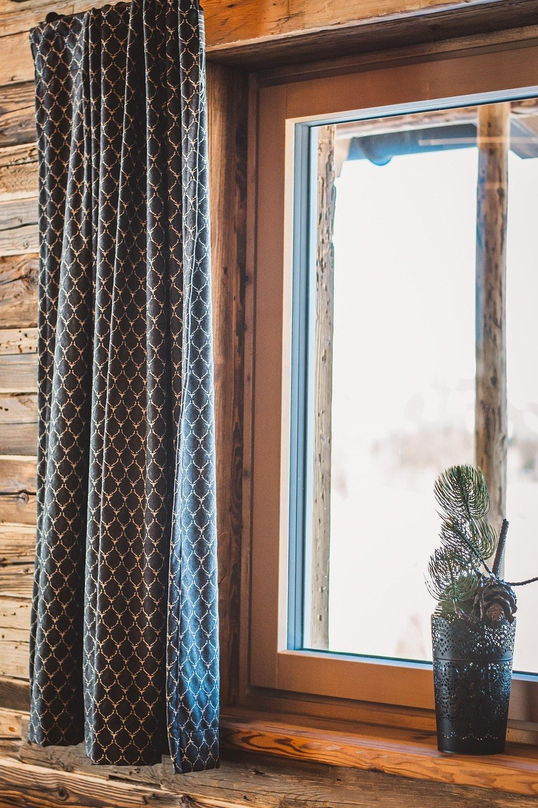
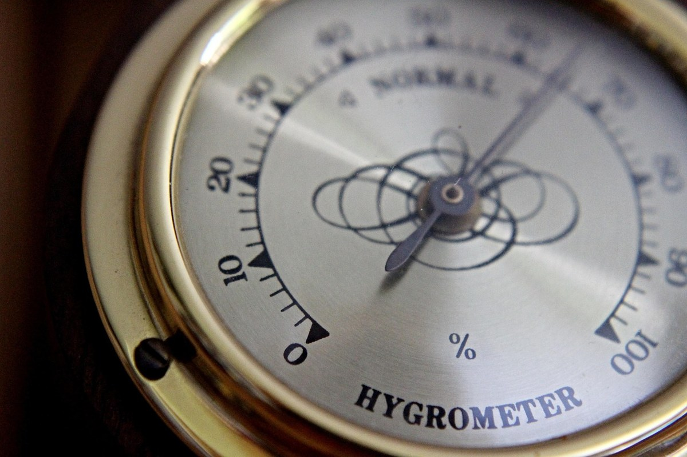

[사진 1: 썸네일]
아침마다 창틀에 고인 물을 휴지로 꾹꾹 눌러 닦고 있나요? 그렇게 며칠 지나면 레일 구석과 실리콘 줄에 까만 점이 하나둘 생기기 시작해요.
창틀 결로 곰팡이 제거는 순서가 중요해요. 물기를 먼저 걷고, 곰팡이가 생긴 자리에 맞는 방법으로 닦고, 마지막으로 다시 맺히지 않게 습기를 줄여야 해요. 오늘은 그 순서를 체크리스트로 정리해 드릴게요.
[사진 2]
📷 [직접 찍은 사진 넣기: 아침에 창틀 레일에 물이 고여 있는 모습]
결로는 밤사이 차가운 유리에 실내 수증기가 맺힌 물이에요. 해가 들기 전에 닦아야 물이 레일로 흘러내려 고이지 않아요. 유리는 스퀴지나 마른 걸레로 위에서 아래로 쓸어 내리고, 레일에 모인 물은 걸레로 한 번에 흡수해 주세요.
휴지는 젖으면 부스러기가 레일 틈에 끼기 쉬워요. 닦은 뒤엔 마른 수건으로 한 번 더 마무리하는 게 좋아요.
✍️ [내 경험 한두 줄: 우리 집에서 결로가 생기는 창은 어느 방 창인가요? (방향, 커튼 여부)]
곰팡이가 어디에 생겼는지에 따라 닦는 방법이 달라요. 유리나 알루미늄 레일처럼 매끈한 곳은 표면만 닦아도 잘 지워지지만, 실리콘이나 고무 패킹은 속으로 파고들어 쉽게 안 지워져요.
| 위치 | 흔한 상태 | 닦는 법 |
|---|---|---|
| 유리 | 얼룩·점 | 중성세제 물걸레 → 마른 걸레 |
| 레일·물빠짐 구멍 | 검은 때, 먼지와 엉김 | 솔·면봉으로 긁어낸 뒤 물걸레 |
| 실리콘·고무 패킹 | 검은 점이 박힘 | 곰팡이 제거제 + 키친타월 덮기 |
| 창 주변 벽지 | 얼룩·들뜸 | 넓게 번지면 무리하지 말고 점검 |
[사진 3]
세로로 서 있는 창틀 실리콘은 세제를 뿌려도 금방 흘러내려요. 키친타월을 길게 잘라 실리콘 위에 붙이고 그 위에 곰팡이 제거제를 적셔 두면 종이가 세제를 머금어 곰팡이에 오래 닿아요. 젤이나 거품 타입이면 더 잘 머물러요.
방치 시간과 희석 비율은 제품 라벨에 적힌 대로 지키세요. 시간이 지나면 타월을 떼고 물걸레로 여러 번 닦아 세제를 남기지 않는 게 중요해요.
📷 [직접 찍은 사진 넣기: 창틀 레일 끝의 물빠짐 구멍을 가까이 찍은 모습]
곰팡이는 물기가 남은 자리에서 다시 자라요. 청소가 끝나면 마른 걸레로 레일 구석과 패킹 틈을 눌러 물기를 빼 주세요. 창틀 아래쪽의 물빠짐 구멍이 먼지로 막혀 있으면 물이 빠지지 않고 고이니 솔이나 면봉으로 뚫어 두면 좋아요.
실리콘을 닦았는데도 검은 자국이 그대로 남는다면 곰팡이가 속까지 번진 경우가 많아요. 이럴 땐 실리콘을 새로 시공하는 것이 근본 해결에 가까워요.
[사진 4]
물기를 닦는 건 이미 생긴 물만 없애는 일이라 습한 공기는 그대로 남아요. 그래서 습기가 생기는 순간에 바로 내보내는 습관이 창틀 결로 곰팡이를 줄이는 핵심이에요.
✍️ [내 경험 한두 줄: 우리 집에서 습기가 제일 많이 생기는 때는 언제인가요? (요리/샤워/빨래 건조)]
Q. 창가에 베이킹소다 그릇을 두면 결로가 없어지나요?
A. 습기를 조금 흡수하는 보조 수단일 뿐이에요. 환기와 제습이 먼저예요.
Q. 락스를 원액으로 쓰면 더 잘 지워지나요?
A. 냄새가 독하고 주변 소재가 변색될 수 있어요. 제품 라벨의 희석 비율을 따르세요.
Q. 매일 닦아야 하나요?
A. 결로가 생긴 날은 아침에 물기만이라도 닦아 주세요. 곰팡이는 보일 때 바로 닦는 게 쉬워요.
정리하면, 물기는 아침에 바로 닦고, 실리콘 곰팡이는 키친타월로 덮어 세제가 머물게 하고, 마지막엔 레일 끝까지 말리기예요. 창틀 결로 곰팡이 제거 뒤에는 환기와 습도 관리로 다시 맺히지 않게 하는 게 가장 중요해요.
여러분 집은 결로를 어떻게 관리하고 있나요? 효과 본 방법이 있다면 댓글로 나눠 주세요.
인스타그램 @todayzip.info 에서 살림 꿀팁을 30초 영상으로도 볼 수 있어요.